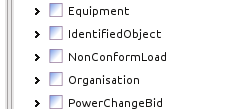
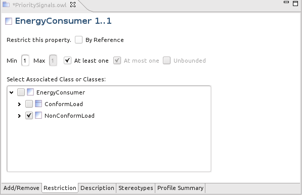
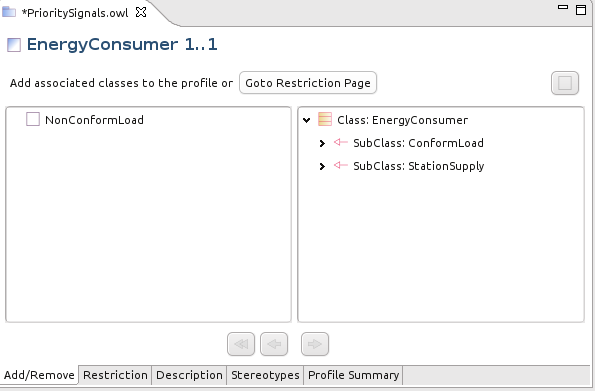

This note explains how to profile associations including how to define anonymous classes for the object of an association. Let's begin.
Adding the Association
Select the class in the profile outline.

The Add/Remove page shows the available attributes and associations. Select an association (e.g. EnergyConsumer) in the right hand panel.

Click the left arrow  to move it left thus adding it to the profile.
to move it left thus adding it to the profile.

Restrict the Association
Double click the newly added EnergyConsumer association (or just select in in the outline) and switch to the Restriction page.

Now:
- Click the By Reference checkbox if the object of the association will be external to the instance message or document and thus outside the scope of the profile.
- Set the Min and Max cardinalities either with explicit numbers or using the checkboxes.
- Choose a class as the object of the association from among the compatible classes already defined in this profile. In this example, ConformLoad (a concrete class) and its base class EnergyConsumer are available.
But, what if the desired class is not yet defined in the profile?
Adding a New Class for the Association
Switch to the Add/Remove page and all of the compatible classes for the EnergyConsumer association in the CIM are shown in the right pane. For this example we highlighted NonConformLoad which was one of the classes not yet in the profile.

Clicking the left arrow now does two things: it adds NonConformLoad to the profile (if it does not immediately appear in the outline then click save).

Also, the newly added class becomes the object of the EnergyConsumer association, which can be seen on the Restriction page.

Incidentally, if we instead selected CIM class ConformLoad and clicked the left arrow (add) then its existing profile class would become the object of the association. No new class would be added to the profile.
Adding and Anonymous Class for the Association
The newly added NonConformLoad is a named profile class. It appears at the top level in the outline (as seen above) and will be translated into a named complexType (if XML schema is generated).
Instead, it is possible to add an anonymous profile class for CIM class NonConformLoad. Instead of clicking the left arrow, the anonymous class button, top right is used. The result looks like this:

The anonymous class is represented by a hollow box in the right pane. It does not appear at the top level of the outline display and it will be translated into an anonymous complexType (in XML schema) nested within the association element definition.
This is only useful when the class will only appear once in the profile. Or, if more than once, when each appearance requires a different definition. It is always possible to use a named class instead of an anonymous class and doing so does not change the semantics of the profile or the interpretation of the generated XML Schema. When more than one profile class is required for the same CIM class they can be given different names and definitions as described in Multiple Profiles.
Earlier versions of CIMTool generated anonymous classes by default. See: why there are so many top level definitions in an XML schema profile for more discussion.